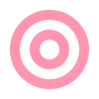

Parent prompts
Conversation starters parents can trust — and children can answer in their own words.
Use these as Instagram captions, Stories stickers, newsletter blocks, or dinner-table cards.
No product, safety, or timeline claims.
Audience: parent
Platform: Instagram / newsletter
Pillar: Values · 18

Hook
Courage can be a quiet sentence.
Copy
Ask tonight:
“When did you feel unsure — and still take a small step?”
Listen longer than you advise. Manu’s courage often starts before she feels ready.
That’s a habit worth practising together.
Visual / motif
Layered orbit motif; soft evening colour wash.
Review notes: No grading the child’s answer; keep tone tender.
Audience: parent + child
Platform: Stories / dinner prompt
Pillar: Friendship · 26

Hook
Who belongs in your child’s circle?
Copy
Prompt for the table:
“If Manu visited today, who would you introduce her to — and why?”
You’re mapping friendship values without a lecture.
Visual / motif
Friendship clover; optional blank “circle of friends” sketch.
Review notes: Inclusive framing; avoid popularity contests.
Audience: parent
Platform: newsletter “Letters from Maitri”
Pillar: Shared reading · 22

Hook
A two-minute reading ritual.
Copy
This week’s letter:
1. Read one short scene together.
2. Pause once.
3. Ask: “What felt fair or unfair here?”
4. End with one kind action for tomorrow — tiny is perfect.
You’re not finishing a curriculum. You’re building a shared language of courage.
Visual / motif
Open heart motif in header of email-style layout.
Review notes: Ritual focus; no book purchase CTA required.
Audience: parent
Platform: Instagram carousel or saveable graphic
Pillar: Values · 28 secondary

Hook
One brave ripple a day.
Copy
Track one small brave moment:
• Asked for help
• Tried again
• Included someone
• Told the truth kindly
• Waited when waiting was hard
Circle one. Celebrate it. That’s how courage becomes ordinary.
Visual / motif
Courage ripple motif; checklist graphic in pastel rose.
Review notes: Celebrate process, not perfection.
Audience: parent (NRI-friendly)
Platform: LinkedIn-lite / Instagram
Pillar: Stories · 20

Hook
Indian childhood memories, made shareable across oceans.
Copy
If you grew up with stories of brave women — or wished you had — Maitri is building a way for children to meet those friends through story and play first.
Not as distant statues. As companions.
What story from your childhood do you want to pass on?
Visual / motif
Story bloom; warm heritage without costume clichés.
Review notes: Inclusive diaspora tone; no gift-SKU hard sell.
Audience: parent
Platform: waitlist follow-up / Stories
Pillar: Waitlist · 25

Hook
Thank you for joining the circle.
Copy
You’re early — and that matters.
We’ll share Manu’s world through story, prompts, and play ideas as we grow.
No rush. No inflated promises. Just friendship, beginning here.
If a friend would love this too, invite them with care.
Visual / motif
Soft sun motif; gratitude tone.
Review notes: No shipping or founder-edition claims.